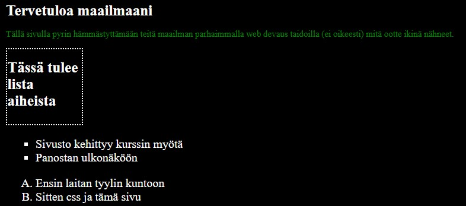
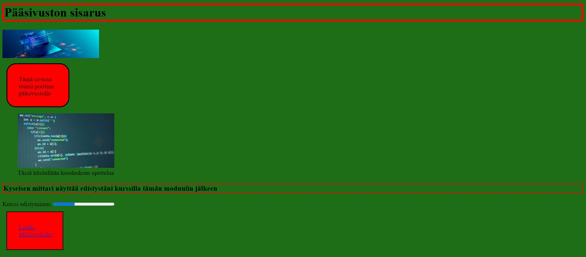
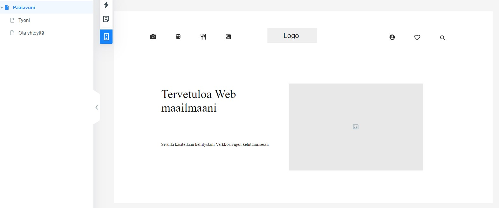
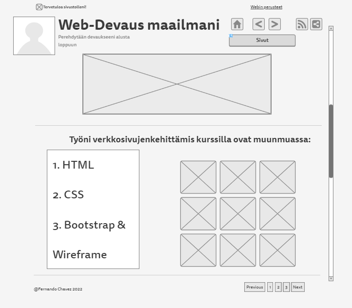

Front-End kehitykseni alkoi vuodesta 2015. Puhtaasta kiinnostuksesta kokeilin ilmaiskursseja Codeacademyssä, taka-ajatuksena oli tuleva urani mahdollisena Full-Stack kehittäjänä.
Front-Endistä on helpompi aloittaa, kun saa kuntoon Sivuston teon perusteet, rakenteet ja kaikki toiminnot kuten animaatiot.
Olen vielä aika ruosteessa pitkän tauon jälkeen, enkä ole tietenkään antanut parasta näiden kehitykselle.
CSS
Perehdyin seuravaaksi CSS:ään (Cascading Style Sheets), joka on verkkosivuille kehitetty tyylisivu. Sillä pystyin määrittelemään omille sivuille useita eri tyyliohjeita, joka helpottaa paljon kun ne voidana laittaa yhden säännöstön alle.
Bootstrap ja Wireframe
Lopuksi otin käyttöön Bootstrapin, joka on avoimen lähden CSS-kehys. Sen avulla pystyin (ja kuka vaa muukin) luomaan paljon nopeammin nättejä ja toimivia sivustoja, sekä lisätä JavaScriptiä omiin sivustoihini.
 Apuna käytetty kolmannen osapuolen sivustoja helpompaan suunnitteluun.Ennen tätä, tuli leikittyä Wireframen eli verkkosivuston lankakehityksen kanssa. Se on tavallaan niin kuin rakennusten pohjapiirrustus.
Täältä löytyy Githubini, en ole tosiaan vielä ladannut mitään korkean tason teoksia sinne "vielä".